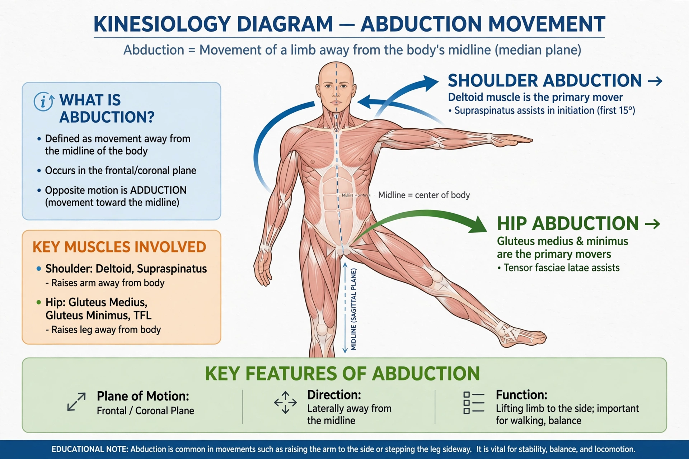

| Abduction | |
|---|---|
 | |
| Opposite | Adduction |
| Plane | Frontal (coronal) |
Abduction, in kinesiology and anatomy, is a movement that pulls a structure or part away from the midline of the body (or, for fingers and toes, away from the midline of the hand or foot). Its opposite is adduction, movement toward the midline. The terms derive from Latin ab- (away) and ad- (toward) plus ducere (to lead).
Raising the arms sideways at the shoulder, spreading the fingers, and moving the leg sideways at the hip are abduction. At the wrist, abduction corresponds to radial deviation. Muscles producing abduction are called abductors: for example, the deltoid and supraspinatus at the shoulder, and gluteus medius and minimus at the hip.
Abductor weakness causes gait abnormalities such as Trendelenburg gait. Testing abduction is a standard part of musculoskeletal and neurological examination, and abduction exercises are central to rehabilitation after hip and shoulder injury.